Probability and Statistics Week 5
조건부 확률
특정 사건이 일어난 것을 알고 있을 때, 다른 사건이 동시에 발생하는 확률 \[ \\P(A | B) = \frac{P(A \cap B)}{P(B)}\\ if\, A \cap B = \empty: P(A | B) = \frac{P(A \cap B)}{P(B)} = 0\\ if\, A \cap B = B: P(A | B) = \frac{P(A \cap B)}{P(B)} = 1\\ P(A | B) + P(A^{`} | B) = \frac{P(A \cap B)}{P(B)} + \frac{P(A^{`} \cap B)}{P(B)} = 1 \] B로 sample space를 줄여서 B가 일어났을 때 A가 일어날 확률을 구하는 개념. 즉, \(P(A | B) + P(A | B^{`}) = 1\) \[ \\A \cap (B \cup C) \ne A \cap B \cup C\\ P(A | B) = \frac{P(A \cap B)}{P(B)}, \, P(B | A) = \frac{P(A \cap B)}{P(A)}\\ P(A \cap B) = P(B)P(A | B) = P(A)P(B | A) \]
Independent variable
\[ \\P(B | A) = P(B) \\P(A | B) = \frac{P(A \cap B)}{P(B)} = \frac{P(A)P(B)}{P(B)} = P(A)\\ \]
아래 것 중 하나라도 성립하면 나머지도 성립 \[ P(A | B) = P(A)\\ P(B | A) = P(B)\\ P(A \cap B) = P(A)P(B) \] 한 사건이 발생한 사실을 아는 것이 다른 사건의 확률에 아무 영향을 주지 못함

Probability Tree
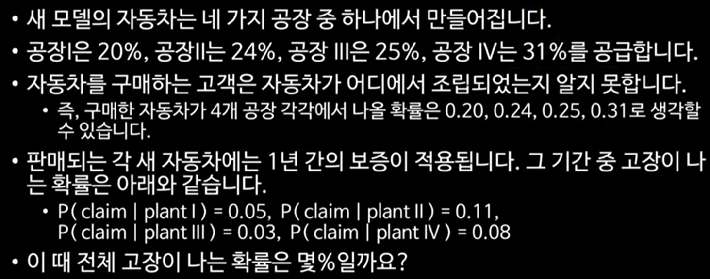
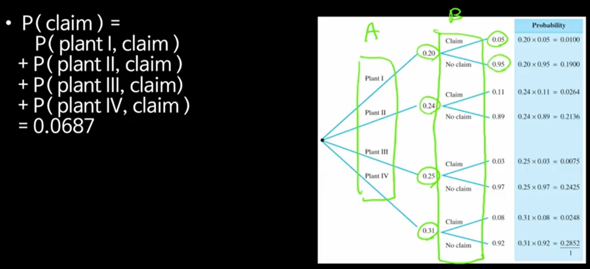 \[ \\P(claim) = P(\operatorname{plant I}) * P(claim | \operatorname{plant I}) + P(\operatorname{plant II}) * P(claim | \operatorname{plant II}) + P(\operatorname{plant III}) * P(claim | \operatorname{plant III}) + P(\operatorname{plant IV}) * P(claim | \operatorname{plant IV}) \]
확률을 세는 방법
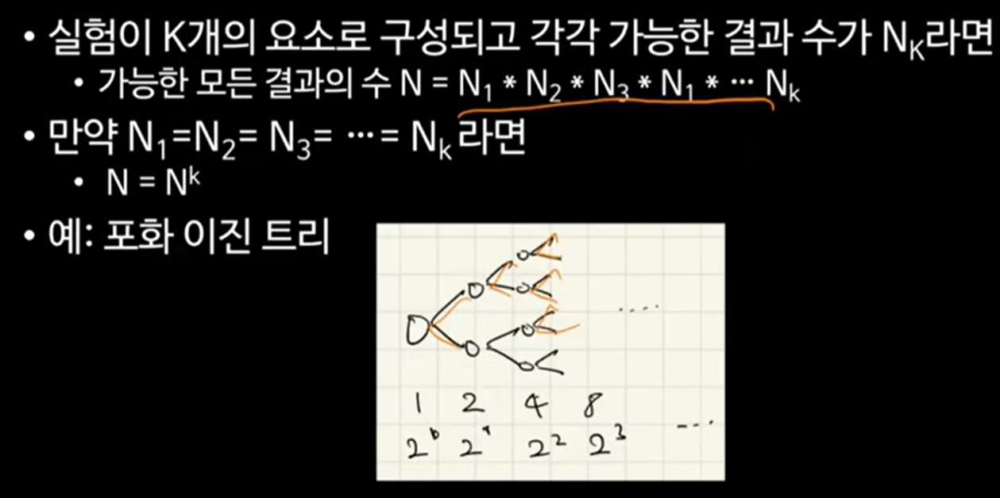
n가지의 선택 중 k번 선택하는 경우
- 복윈: \(N = n^{k}\)
- 비복원
- 순서가 있는 경우: Permutation
- 순서가 없는 경우: Combination
Law of Total Probability (전체 확률의 법칙)
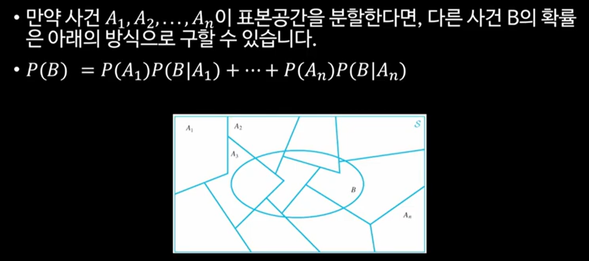
Posterior probabilities (사후확률)
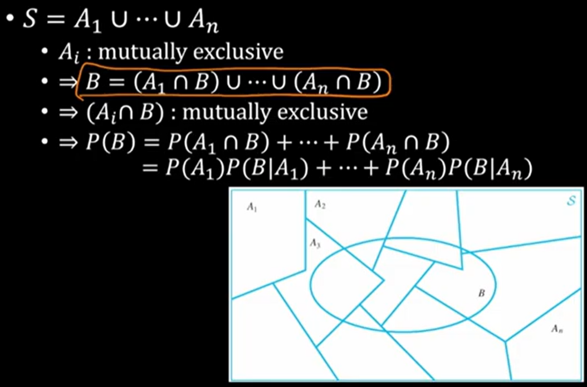
Bayes’ Theorem
\[ \\P(A_{i}): \text{prior probability} \\P(B | A_{i}): \text{likelihood probability} \\P(A_{i} | B) = \frac{P(A_{i})P(B | A_{i})}{\sum_{j = 1}^{n}{P(A_{j})P(B | A_{j})}}: \text{posterior probability} \]
베이지안 이론
빈도주의 vs. 베이지안
아는 확률을 통해서 모르는 확률을 추론하는 것 - 베이지안 이론
example
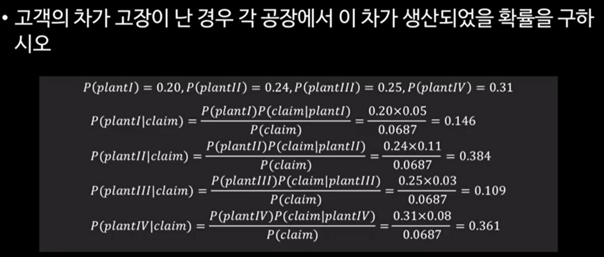
Random variable
표본공간 S에 대해서 대응하는 real number를 연결하는 함수
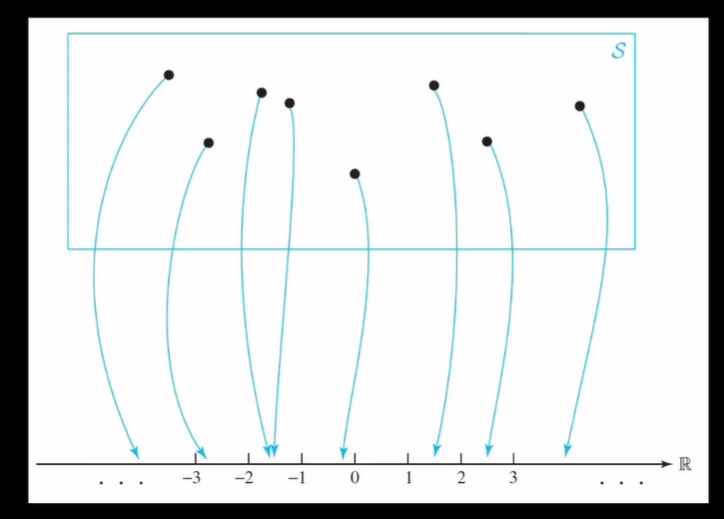
변수지만 사실상 함수의 개념. output을 실수와 mapping
example
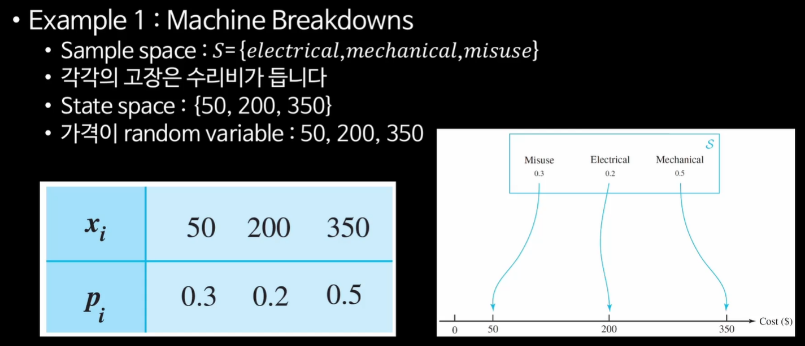
확률변수의 종류
- discrete random variable - 불연속적인 특정 값만 가지는 경우 -> probability mass function
- continuous random variable - 어떤 구간 내에서 임의의 실수 값을 가지는 경우 -> probability density function
Probability Mass Function (확률질량함수)
이산형 확률변수 X가 어떤 값 \(x_{i}\)를 가질 확률 \(p_{i}\) \[ \\P(X = x_{i}) = p_{i} \] Histogram을 총 sample의 수로 나눈 것과 사실 상 같음
아래의 두 조건을 만족해야 함 \[ \\0 \le p_{i} \le 1 \\\sum_{i}{p_{i}} = 1 \] Hisgotram처럼 bar 형태로 그릴 수 있음
example
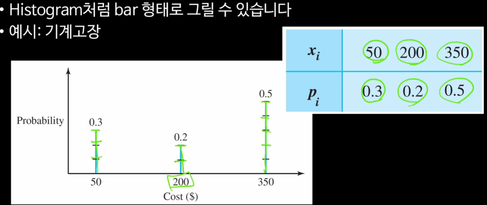
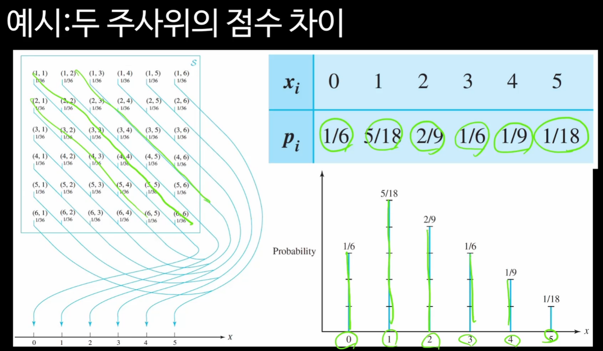
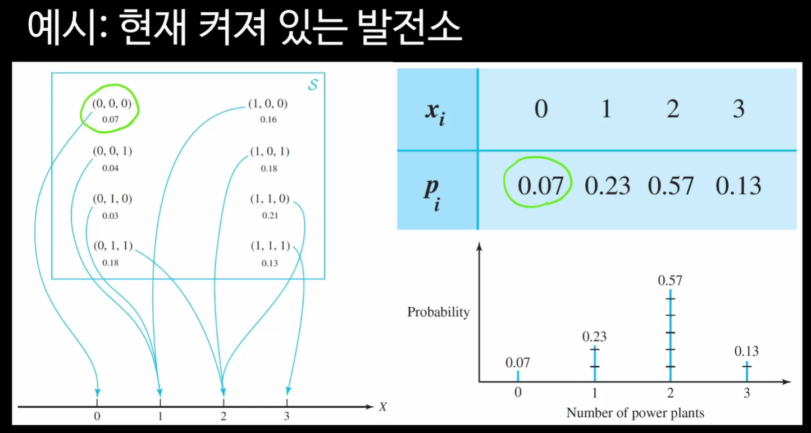
mapping된 특정 real number에만 값이 있는 것임
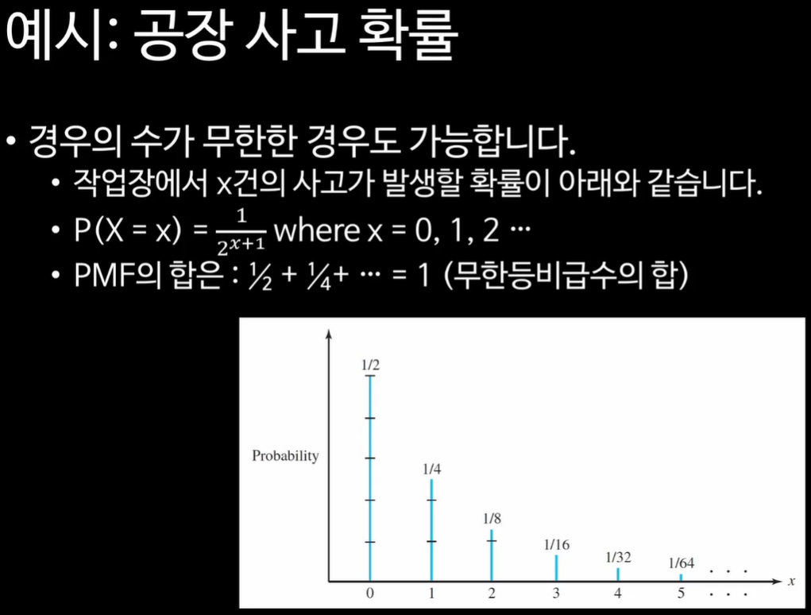
Cumulative Distribution Function (누적분포함수)
\[ \\F(x) = P(X \le x) \\F(x) = \sum_{y:y<=x}{P(X = y)} \]
example
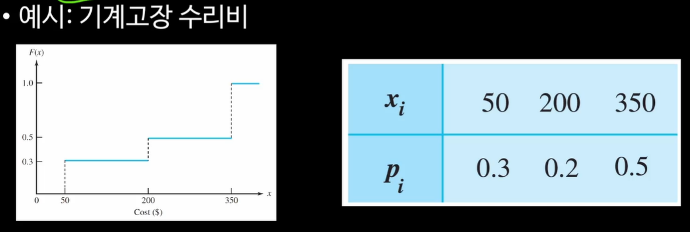
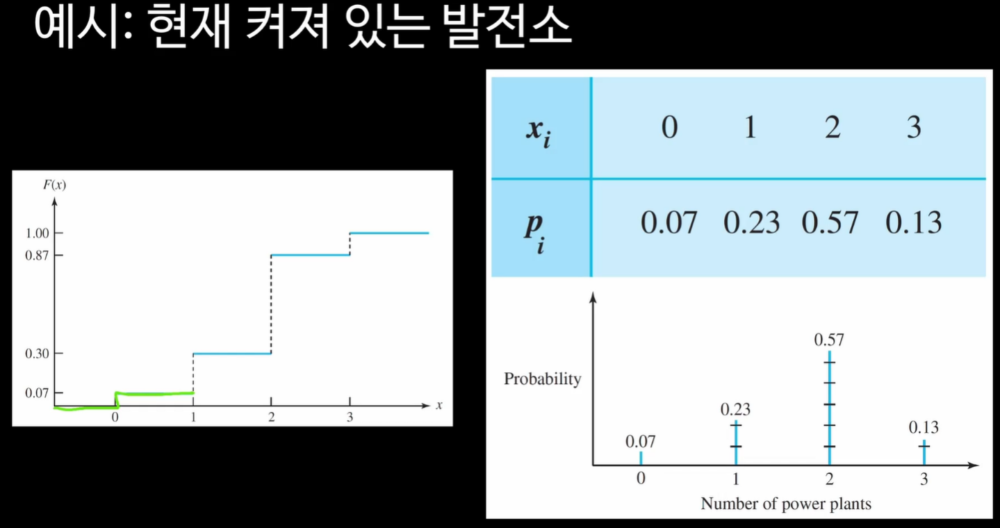 \[ \\0 \le F_{X}(x) \le 1 \\F_{X}(\infty) = 1 \\F_{X}(-\infty) = 0 \\F_{X}(x_{1}) \le F_{X}(x_{2}) for x_{1} < x_{2} \]
CCDF (Complementary Cumulative Distribution Function)
\[ \\1 - F_{X}(x) = P(X >= x) \]
파레토 분포 등을 볼 때 유용하게 쓰임
20:80법칙 생각하면 됨
relationship between PMF and CDF
\[ \\P(x_{1} < X <= x) = F(x_{2}) - F(x_{1}) \]
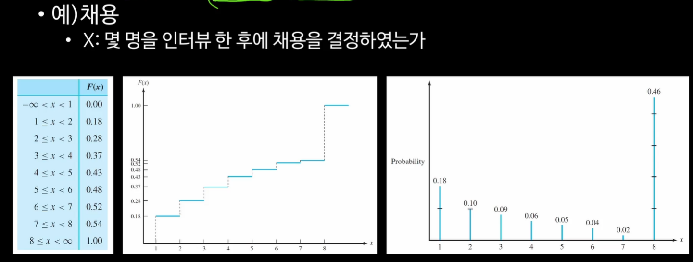
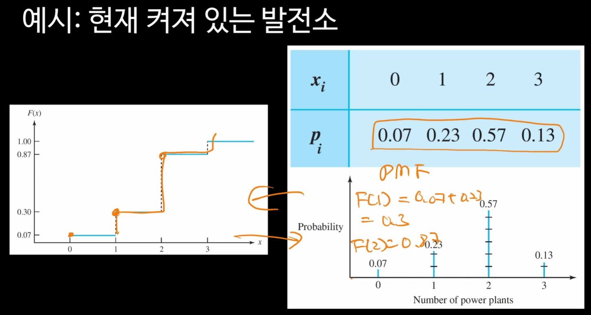